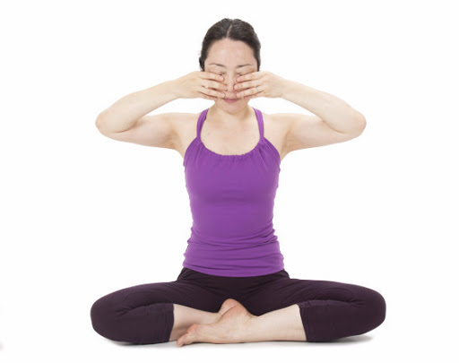

3
2
1
Sit up straight with your eyes closed for sometime. Place your index fingers on the cartilage between your cheek and ear. Take a deep breath in and as you breathe out, gently press the cartilage. You can keep the cartilage pressed or press it in and out with your fingers while making a loud humming sound like a bee.Breathe in again and continue the same pattern 3-4 times.Then RELAX.

Back
START